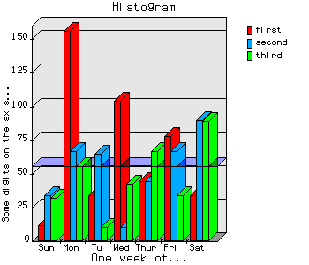
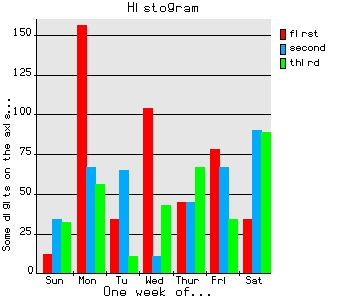
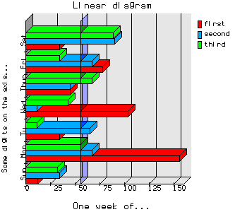
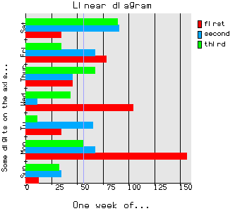
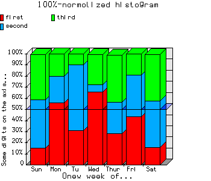
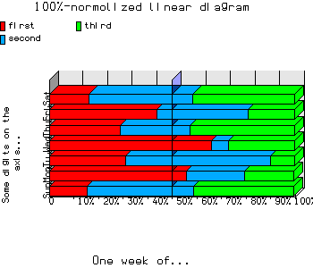
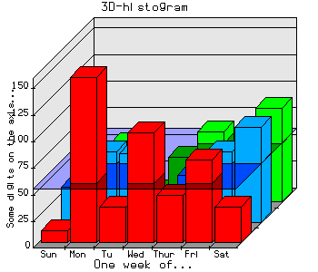
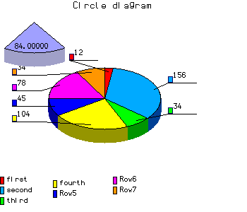
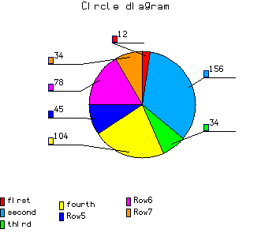
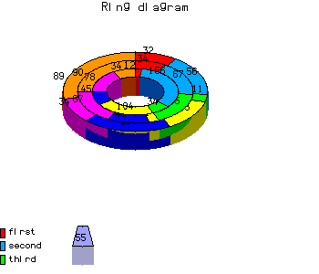

CLIP home page
Business graphics library
Includig classes for creating:
- histograms -
BgHistNew(sizeX, sizeY)
- histograms with cumulation -
BgHistCumulNew(sizeX, sizeY)
- 100%-normalized histograms -
BgHistNormNew(sizeX, sizeY)
- 3D-histograms -
BgHist3DNew(sizeX, sizeY)
- linear diagram -
BgLineNew(sizeX, sizeY)
- linear diagram with cumulation -
BgLineCumulNew(sizeX, sizeY)
- linear 100%-normalized diagram -
BgLineNormNew(sizeX, sizeY)
- circle diagram -
BgCircleNew(sizeX, sizeY)
- ring diagram -
BgRingNew(sizeX, sizeY)
Attributes
| Attribute name |
Attribute value |
| sizeX | width picture |
| sizeY | high picture |
Methods/Functions
Creating
bg=BgHistNew(sizeX, sizeY)
bg=BgHistCumulNew(sizeX, sizeY)
bg=BgHistNormNew(sizeX, sizeY)
bg=BgHist3DNew(sizeX, sizeY)
bg=BgLineNew(sizeX, sizeY)
bg=BgLineCumulNew(sizeX, sizeY)
bg=BgLineNormNew(sizeX, sizeY)
bg=BgCircleNew(sizeX, sizeY)
bg=BgRingNew(sizeX, sizeY)
bg=BgNew(bgType, sizeX, sizeY) - total business graphics, where bgType - graphics type (see bggraph.ch)
Method bg:setData(arr[, legend][, alignLeg][, signat]) --> .t./.f.
Settings data,
arr - array of data
legend - legend, array
alignLeg - align legend (ALIGN_NONE | ALIGN_TOP | ALIGN_BOTTOM | ALIGN_LEFT | ALIGN_RIGHT),
types defined in bggraph.ch
signat - categoryes, array
Method bg:setInfo([title][, subTitle][, vrtTitle]) --> .t.
Create title, subtitle and title for vertical axis.
Method bg:setAverage(type[, value]) --> .t./.f.
On/Off draw middle-value line,
type - :
0 - nothing showed
1 - showed middle-value
2 - showed "critical" value
3 - showed middle and critical values
value - critical value.
Attantion: at now worked only type=0 and type=1.
Method bg:setVolume([volume]) --> volume
On/Off volume. For all classes exclude BgHist3DNew.
volume - .t./.f. on/off volume
If called method without parameters, then volume shell be inverted.
Method bg:drawImage() --> .t./.f.
Drew graphic.
Method bg:storeImage(type, filename) --> .t./.f.
Store image to file.
type - type of file: GDFILE_PNG | GDFILE_GD | GDFILE_GD2 | GDFILE_XBM | GDFILE_JPEG ,
by default - GDFILE_PNG
filename - file name
Simple example:
#include "gdinfo.ch"
#include "bggraph.ch"
local bg, data, legend, alignleg, signat
bg := BgHistNew(300, 300)
data := {{12, 156, -34, 104, 45, 78, -34},{34,67, 65,11,-45,-67,90}, {32, 56, 11, 43, 67, 34, 89}}
legend := {"first", "second", 'third', 'fourth'}
signat := {"Sun", "Mon", 'Tu', 'Wed', "Thur", "Fri", "Sat"}
alignleg := ALIGN_RIGHT
bg:setData(data, legend, alignleg, signat)
bg:setInfo("Histogram", "One week of...", "Some digits on the axis...")
/* drew graphic in volume */
bg:setAverage(1)
bg:setVolume(.t.)
bg:drawImage()
/* and store it */
bg:storeImage(GDFILE_PNG, "hist1.png")
/* now the same but 2D */
bg:setAverage(0)
bg:setVolume(.f.)
bg:drawImage()
bg:storeImage(GDFILE_PNG, "hist2.png")
Next example for BgNew():
#include "gdinfo.ch"
#include "bggraph.ch"
local bg, data, legend, alignleg, signat
bg := BgNew(BG_TYPE_HIST, 300, 300)
data := {{12, 156, -34, 104, 45, 78, -34},{34,67, 65,11,-45,-67,90}, {32, 56, 11, 43, 67, 34, 89}}
legend := {"first", "second", 'third', 'fourth'}
signat := {"Sun", "Mon", 'Tu', 'Wed', "Thur", "Fri", "Sat"}
alignleg := ALIGN_RIGHT
bg:setData(data, legend, alignleg, signat)
bg:setInfo("Histogram", "One week of...", "Some digits on the axis...")
/* drew graphic in volume */
bg:setAverage(1)
bg:setVolume(.t.)
bg:drawImage()
/* and store it */
bg:storeImage(GDFILE_PNG, "hist1.png")
/* now the same but 2D */
bg:setAverage(0)
bg:setVolume(.f.)
bg:drawImage()
bg:storeImage(GDFILE_PNG, "hist2.png")
Histogram
showed values different categoryes
|
|---|
| 
| 
|
| 
| 
|
Histogram with cumulation
showed part every categories in sum total
|
|---|

| 
|

| 
|
100%-normolized histogram
showed piece every categories in sum total
|
|---|
| 
| 
|
|
| 
|
3D histogram
showed values different categoryes by lines
|
|---|
| 
|
Circle diagram
showed part(values or percent) every categories in sum total
|
|---|
| 
| 
|
Ring diagram
showed part(values or percent) every categories in sum total. Equivalent circle
diagram but showed some lines of data
|
|---|
| 
| 
|
CLIP home page
© E.Kornilova, alena@itk.ru, 2000